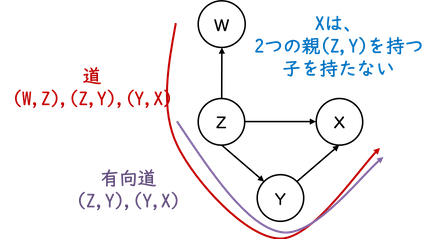
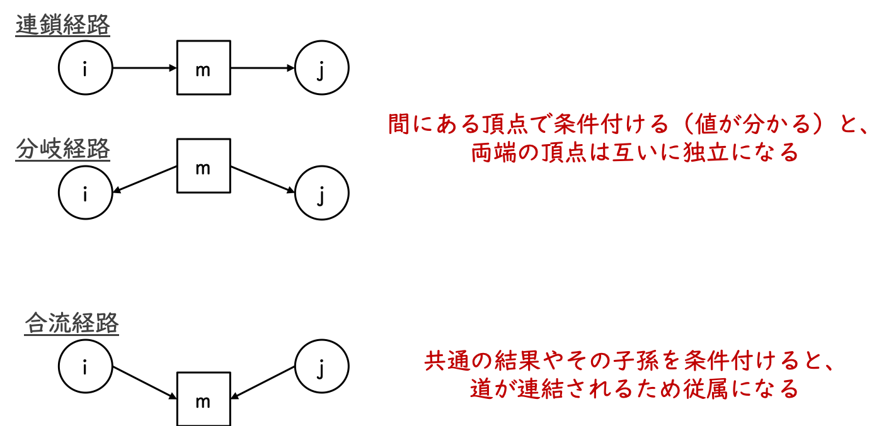

統計的因果推論 輪読 ＃1
第1章 確率、グラフ、因果モデル入門
小西伶児
2019/08/23
1章のまとめ
- 因果関係を解析するにあたって、確率論（主にベイズ）の考え方を導入
- 条件付き確率、条件付き独立、ベイズ規則、グラフォイド原理
- 確率変数間の関係性を表現するため、グラフ（DAG）を導入
- マルコフ的、有向分離基準
- Zが有向分離しているなら、確率分布でZを与えたとき、XとYは条件付き独立
- DAGは必ずしも因果を意味しないので、因果ベイジアンネットワークを導入
(ここまでが確率モデルの話)
- 反事実を議論するために、関数因果モデルを導入
- 予測・介入・反事実という3つの階層について、それぞれ説明
1.1 確率論入門
(前回部分。今回は省略。)
確率を用いる理由
確率論の基本概念
連鎖公式と独立・条件付き独立
条件付き確率
ベイズの定理をオッズで表現
ベイズの定理の例
1.2 グラフと確率
用語と記号
- V 頂点（ノード） ：確率変数
- E 辺（リンク） ：変数間に何らかの関係がある
- 意味は分野によって異なる
- 辺で結ばれた2つの頂点は隣接する
- 有向辺（矢線）、無向辺、双方向辺（交絡因子の存在を示す）
- すべての辺が矢線であれば有向グラフ
- 巡回（X→Y, Y←X）してても良いが、自己ループ（X→X）はNG
- 巡回のないグラフを非巡回的有向グラフ（directed acyclic graph, DAG）
- 頂点のすべての組が連結しているグラフは「完全である」と言う
用語と記号(つづき)
- スケルトン ：グラフGからすべての辺を除いた状態
- 道 ：先行する辺の頂点から始まるような辺の列
- 矢線の向きがすべて同じであれば有向道
- 変数間に道があれば連結されている、なければ切断されている
- グラフにおける関係 ：親・子・子孫・先祖
- A（Bの親・先祖・非子孫） → B（Aの子・子孫）
- ルート :親を持たない頂点
- シンク :子を持たない頂点

有向分離基準
- 条件付き独立関係の調べ方（DAGの作り方）
- 定義（有向分離基準）
非巡回的有向グラフにおいて、道pが次のいずれかを満たすとき、 道pは頂点集合Zによって有向分離（ブロック）されるという。- 道pは、ある頂点mがZに含まれるような連鎖経路（i→m→j）か分岐経路（i←m→j）を含む
- 道pは、mもその子孫もZに含まれないような合流経路（i→m←j）を含む
有向分離基準（イメージ）

スプリンクラーの例
- \(Z=\{X1\}\) とおくと、\(Z\) は \(X2\) と\(X3\) を連結する2つの道をブロックしている
- \(Z\) は \(X2\) と\(X3\) を有向分離している
- 道X2←X1→X3は分岐経路で、X1はZの要素である。
⇒ Zによってブロック（条件1）
- 道X2→X4←X3は合流経路で、X4もその子孫もZの要素ではない
⇒ Zによってブロック（条件2）
- 道X2←X1→X3は分岐経路で、X1はZの要素である。

条件2の補足（選択バイアス）
ある資格の合否判定は、試験Aと試験Bの合計点で行われているとする。（Aの点数 → 合否 ← Bの点数）
試験Aと試験Bは異なる能力を測るものなので、点数は独立であるが、 合格者の2つの試験の点数の分布を見ると、負の相関が見られる。
合否が分かることで本来は独立の原因が、従属する場合がある。

ベイジアンネットワーク
- 同時確率関数を簡潔に表現する役割
- n個の2値確率変数に対する同時分布を明確に表現するには、
\(2^n\) 個のセルからなる表が必要 - 各変数が小さな部分集合に従属する場合は、従属情報を用いることで、 同時分布をいくつかの小さな周辺分布関数に分解でき、 それらをつなぎ合わせることで全体を表現できる
（これをグラフで表現できる！） - 無向グラフ ：マルコフ・ネットワーク
- 有向グラフ ：ベイジアン・ネットワーク
- n個の2値確率変数に対する同時分布を明確に表現するには、
ベイジアンネットワークの構成方法
- 逐次的因数分解
\[ P(x_1,...,x_p) = \prod_{i=1}^p P(x_i|x_1,...,x_{i-1}) \]
- ベイジアンネットワーク
- \(X_i\) の条件付き確率が、\(X_1,...,X_{i-1}\) すべてではなく、
\(PA_i\) という \(X_i\) の非子孫の部分集合で規定されているものとする - \(PA_i\)は、\(PA_i\)以外の非子孫すべてと\(X_i\)が独立となる極小集合
- \(X_i\) の条件付き確率が、\(X_1,...,X_{i-1}\) すべてではなく、
\[ P(x_i|x_1,...,x_{i-1}) = P(x_i|pa_i) \]
- 集合\(PA_i\) を非巡回的有向グラフの親の集合とみなし、
その各要素から\(X_i\) へ矢線を引く
ベイジアンネットワークの構成方法（手順）
- 3つの変数\(\{X_1, X_2, X_3\}\)について考える
- 頂点の組\((X_1,X_2)\) について、2つの変数が従属している時に限り\(X_1\)から\(X_2\)へ矢線を引く
- \(X_2\)が\(X_3\)と\(X_1\)を分離しているか、or \(X_1\)が\(X_2\)と\(X_3\)を分離しているかを調べる
- 前者の場合、\(X_2\)から\(X_3\)へ矢線を引く
- 後者の場合、\(X_1\)から\(X_3\)へ矢線を引く
- 両方起こらない場合、\(X_1\)と\(X_2\)の両方から\(X_3\)へ矢線を引く
親マルコフ条件
- Pearl本 定理1.2.7
- 別名？ 局所的有向マルコフ性(黒木本)
- ベイジアンネットワークの構成方法により成り立つ定理
DAG \(G\)において、任意の変数\(X_i\)に対して、その親の集合\(PA_i\)を与えたとき、 \(X_i\)の親以外の非子孫からなる集合\(ND_i\)と\(X_i\)は条件付き独立
\[ X_i 独立 (ND_i\backslash PA_i)|PA_i \]
有向分離基準の確率論的意味
- Pearl本 定理1.2.4
- 別名？ 大域的有向マルコフ性(黒木本)
DAG \(G\)において、\(Z\)が\(X\)と\(Y\)を有向分離するならば、 \(G\)と整合するすべての確率分布において、\(Z\)を与えたとき、\(X\)と\(Y\)は条件付き独立
\[ X 独立 Y|Z \]
観察的同値性の定理
- Pearl本 定理1.2.8
- 観察的同値
- あるDAG \(G\) と一致する確率分布が、他のDAGとも一致する
2つのDAGが観察的同値である \(\Leftrightarrow\)
2つのDAGが同じスケルトンであり、同じV字合流を持つ。 つまり、2つの合流する矢線がある場合は、その尾が矢線で連結していない。
- 観察的同値であるグラフは、データだけでは、矢線の向きがどちらが正しいか決定できない
- スプリンクラーの例で、\(X_1 \rightarrow X_2\)と\(X_2 \rightarrow X_4\)の矢線を逆にしてみる
ベイジアンネットワークによる推論
- 1980年代初頭に開発
- メッセージ・パッシング・アーキテクチャー
- ツリー構造に限られる
- ジョイン・ツリー・プロパゲーション法
- クラスター単位でのグラフを作成
- 計算量がネットワークの大きさに対して指数的に増加
- カットセット・コンディショニング法
- いくつかの結果を平均する？
- 計算量がネットワークの大きさに対して線形に増加
- 確率論的シミュレーション(ギブスサンプリング)
1.3 因果ベイジアン・ネットワーク
因果ベイジアン・ネットワーク
- DAGは必ずしも因果関係を意味するものではないが、実際に使われるときは因果的解釈をしようとしている
- 利点1
因果関係に関する基本知識と観察データを結びつけて、意味があり・利用しやすく・信頼できる結果を得られる- 確率関係は連鎖公式で任意の変数順序で因数分解できるが、理解しづらくなる
- 利点2
得られた結果の外的、自発的変化を簡単に表現し、再構成ができる- スプリンクラーの例
- 故障したスプリンクラーを表現するには、その頂点に向かう矢線を除去
- 雨が降ったらスプリンクラーが動かないのであれば、雨からスプリンクラーに矢線を追加
- スプリンクラーの例
因果ベイジアン・ネットワーク(定義)
- 変数集合\(V\) の確率分布 \(P(v)\)
- 部分集合\(X\) を定数\(x\)とする介入\(do(X=x)\)から得られる確率分布 \(P_x(v)\)
- \(P_x(v)\)は\(G\)についてマルコフ的
- 「介入する」確率は1である
- 任意の\(V_i \notin X\)に対して、\(P_x(v_i|pa_i) = P(v_i|pa_i)\)が成り立つ
因果ベイジアン・ネットワーク(例)
\[
P(x_1,x_2,x_3,x_4,x_5) \\ = P(x_1)P(x_2|x_1)P(x_3|x_1)P(x_4|x_2,x_3)P(x_5|x_4)
\] 
\[
P_{X_3=作動} \quad (x_1,x_2,x_4,x_5) \\ = P(x_1)P(x_2|x_1)P(x_4|x_2,X_3=作動)P(x_5|x_4)
\] 
切断的因数分解

任意の\(i\)に対して \[ P(v_i|pa_i) = P_{pa_i}(v_i) \]
任意の\(i\)および\(\{V_i,PA_i \}\)と排反な任意の変数集合\(S\)に対して \[ P_{pa_i,s}(v_i) = P_{pa_i}(v_i) \]
因果関係と確率関係
- 因果関係
- 存在論的であり不変
- スプリンクラーの状態は雨量に影響を与えない
- 確率関係
- 認識論的であり変化する
- スプリンクラーの状態と雨量は独立である
- 季節がわかるとスプリンクラーと雨量は独立になる
- 季節がわかり更に歩道が濡れていれば非独立になる
1.4 関数因果モデル
構造方程式
- 関数因果モデル \[
x_i = f_i(pa_i,u_i), \quad i=1,...,n
\]
- \(pa_i\)は親（\(x_i\)の直接原因）、\(u_i\)は不特定な原因、誤差
- SEMはこの関数が線形なもの
- ある方程式に影響がある変化があっても、他の方程式は不変（自律的）
- 同じ変数でも、左辺と右辺では意味が違う
- 予測・介入・反事実の3つに焦点を当てる
- 広告に接触すれば、商品を買ってくれるか？(予測)
- 広告に接触するように制御すれば、商品を買うか？(介入)
- 広告に接触すると商品を買っている。この条件の下で、広告に接触しなければ、商品を買わなくなるか？(反事実)
確率的予測
- 因果マルコフ条件
- Pearl本 定理1.4.1
- 因果ダイアグラムGについて、親マルコフ条件を満たす確率分布が存在
- 関数因果モデルを利用する利点
- 因果ダイアグラムGで表現される条件付き独立関係は、パラメータの変化に対して不変
- 使用するパラメータが少なくてすむ
- 観測変数間の条件付き独立関係の判断が用意になる
介入と因果効果
- 介入による全体的な効果は、介入に対応する方程式を修正し、修正されたモデルで新しい確率分布を計算すればよい
- スプリンクラーの例
- 「スプリンクラーを作動させる」という介入
\[ \begin{align*} x_1 &= u_1 \\ x_2 &= f_2(x_1,u_2) \\ x_3 &= f_3(x_1, u_3) \quad \Longrightarrow \quad x_3 = 作動\\ x_4 &= f_4(x_3,x_2,u_4) \\ x_5 &= f_5(x_4,u_5) \end{align*} \]
反事実
- 反事実関係は、確率的因果ダイアグラムでは定義できない
- 治療を受けた死亡した人が、治療を受けなかった場合の反応は得られない
- 反事実の表現
- 人間は、不適切な反事実的記述と適切な反事実的記述は区別できる
- Clinton大統領がLewinskyが出会わなければ、歴史的立場は違っていた
- Clintonが昨日の朝食を食べなければ、歴史的立場は違っていた
- Stalnaker、Lewisの近傍世界的意味論
- Aが真である近傍世界においてBが真である場合、「Aが真ならBも真だろう」
- 距離尺度は？人間と機械が処理できるようにするには？
- Rubinの潜在反応アプローチ
- 人間は、不適切な反事実的記述と適切な反事実的記述は区別できる
反事実確率の定式化
- 反事実確率
- 治療を受けて死亡した患者が、もし治療を受けなかったら回復しただろう確率
- 次の3ステップで計算可能
- 確率\(P(u)\) (モデルの変数)を更新して \(P(u|e)\)を得る
- 変数集合\(X\)に含まれる変数に対応する方程式を\(X=x\) (反事実)に置き換える
- 修正されたモデルで\(Y=y\)の確率を計算する
ランダム化臨床試験の例
- \(X\)が治療、\(Y\)が死亡を表す
- \(X\)と\(Y\)を2値変数\(U_1\)と\(U_2\)を用いて以下のようにモデル化
- \(P(u_1=1)=P(U_2=1)=0.5\)
\[ \begin{align*} x &= u_1 \\ y &= xu_2 + (1-x)(1-u_2) \end{align*} \]
- 治療を受けて死亡\((x=y=1)\)をモデルに代入し、\(u_1=u_2=1\)を得る
- このパラメータの元で反事実である\(x=0\)を代入
- \(y=0\)を得る
- 仮想的条件の元では回復する確率は1となる